Static Plotting Examples¶
This notebook demonstrates the usage of adataviz static plotting functions:
plot_categorical– UMAP colored by categorical annotationsplot_gene– UMAP colored by gene expression + violin plotstacked_barplot– cell type composition across groups
[1]:
import os
import sys
sys.path.append(os.path.expanduser("~/Projects/Github/adataviz"))
import adataviz as av
import anndata
# Apply publication-quality matplotlib defaults.
av.pl.use_scientific_style()
[2]:
# Path to the example AnnData file
adata_path = "~/Projects/BICAN/adata/HMBA_v2/HMBA.Group.downsample_1500.h5ad"
# Quick look at the data
adata = anndata.read_h5ad(os.path.expanduser(adata_path), backed="r")
print(f"Shape: {adata.shape}")
print(
f"Categorical columns: Neighborhood ({adata.obs['Neighborhood'].nunique()}), "
f"Class ({adata.obs['Class'].nunique()}), "
f"Subclass ({adata.obs['Subclass'].nunique()}), "
f"Group ({adata.obs['Group'].nunique()})"
)
print(f"Embeddings: {list(adata.obsm.keys())}")
adata.file.close()
Shape: (70134, 36601)
Categorical columns: Neighborhood (4), Class (12), Subclass (36), Group (60)
Embeddings: ['X_scVI', 'X_umap']
1. plot_categorical – Categorical UMAP (or TSNE)¶
Plot a UMAP embedding colored by a categorical variable (e.g. Class), with labeled cluster centroids.
[3]:
# Basic usage: color by Class with text annotation
ax = av.pl.plot_categorical(
adata=adata_path,
basis="umap",
groupby="Class",
coding=False,
text_anno="Class",
# save="Class.umap.no_text.pdf",
palette=None, # legend_kws=dict(bbox_to_anchor=(0.1,0.9),ncol=2),
axis_format="tiny",
figsize=(4, 3.5), # rectangle_marker=True
show_legend=True,
)
/home/x-wding2/Projects/Github/adataviz/adataviz/utils.py:785: FutureWarning: The default of observed=False is deprecated and will be changed to True in a future version of pandas. Pass observed=False to retain current behavior or observed=True to adopt the future default and silence this warning.
for text, sub_df in data.groupby(anno_col):
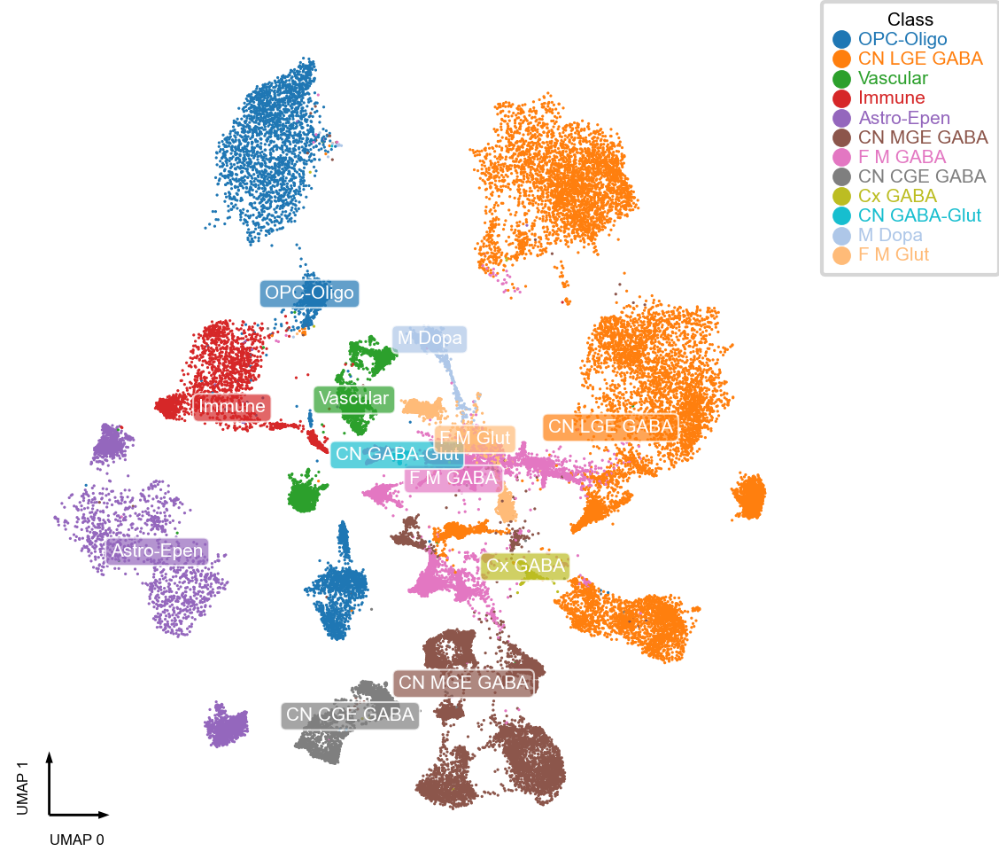
[4]:
# Color by Subclass with more legend columns and coding annotation
ax = av.pl.plot_categorical(
adata=adata_path,
basis="umap",
groupby="Subclass",
coding=True,
text_anno="Subclass",
# save="Subclass.umap.no_text.pdf",
palette=None,
fontsize=4,
legend_fontsize=4,
legend_title_fontsize=6,
legend_kws=dict(
ncol=2, # bbox_to_anchor=(0.7,0.9)
labelspacing=0.8,
borderpad=1,
handletextpad=0.8,
),
axis_format=None,
figsize=(4, 3),
show_legend=True,
)
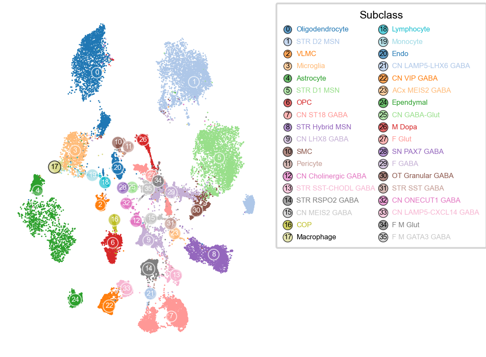
[5]:
# Basic usage: color by Subclass with outline (for selected cell types only)
palette = (
adata.obs.drop_duplicates("Subclass")
.set_index("Subclass")["color_hex_subclass"]
.to_dict()
)
ax = av.pl.plot_categorical(
adata=adata_path,
basis="umap",
groupby="Subclass",
coding=False,
text_anno=None,
outline=adata.obs.Subclass.apply(
lambda x: x
if x
in [
"STR D1 MSN",
"STR D2 MSN",
"STR Hybrid MSN",
"Astrocyte",
"Oligodendrocyte",
]
else None
),
outline_kws={
"linewidth": 1,
"palette": palette,
"linestyles": "densely dashed",
"single_contour_pad": 1,
"threshold": 0.04,
"smooth_sigma": 5,
},
palette=palette, # legend_kws=dict(bbox_to_anchor=(0.1,0.9),ncol=2),
axis_format="tiny",
figsize=(4, 3.5), # rectangle_marker=True
show_legend=True,
)
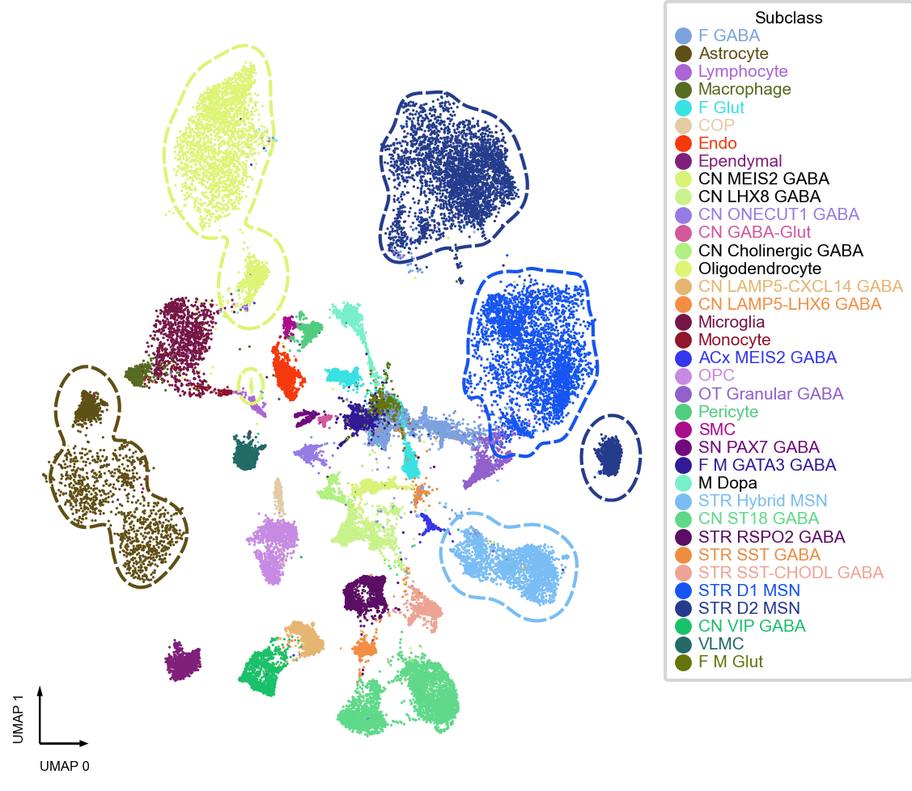
2. plot_gene – Gene Expression on UMAP + Violin Plot¶
Plot a single gene’s expression on the UMAP embedding. When groupby is provided, a violin plot is also generated.
[6]:
# Plot GAD2 (GABAergic neuron marker) on UMAP, plus a per-Class boxplot.
import matplotlib.pyplot as plt
av.pl.plot_gene(
adata=adata_path, gene="GAD2", basis="umap", cmap="RdBu_r", save="test.pdf"
)
/home/x-wding2/Projects/Github/adataviz/adataviz/pl/scatter.py:315: UserWarning: This figure includes Axes that are not compatible with tight_layout, so results might be incorrect.
fig.savefig(os.path.expanduser(save), bbox_inches="tight")
/home/x-wding2/Software/conda/m3c/lib/python3.10/site-packages/IPython/core/pylabtools.py:170: UserWarning: This figure includes Axes that are not compatible with tight_layout, so results might be incorrect.
fig.canvas.print_figure(bytes_io, **kw)
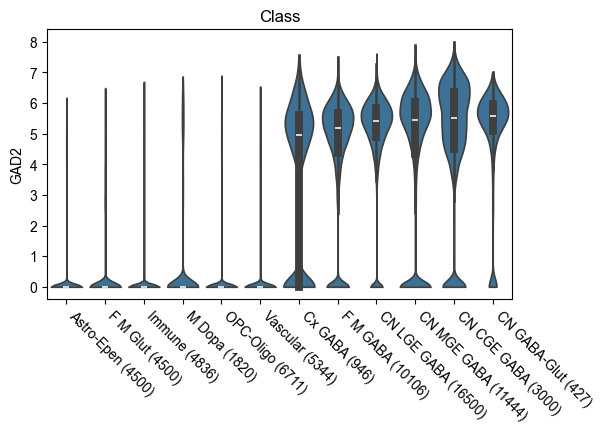
[6]:
<Axes: title={'center': 'GAD2'}>
[7]:
ax = av.pl.boxplot(
adata=anndata.read_h5ad(os.path.expanduser(adata_path))[:, ["GAD1", "GAD2"]],
genes=["GAD1", "GAD2"],
groupby="Class",
kind="violin",
show=False,
)
/home/x-wding2/Projects/Github/adataviz/adataviz/pl/expression.py:144: FutureWarning:
Passing `palette` without assigning `hue` is deprecated and will be removed in v0.14.0. Assign the `x` variable to `hue` and set `legend=False` for the same effect.
sns.violinplot(
/home/x-wding2/Projects/Github/adataviz/adataviz/pl/expression.py:144: FutureWarning:
Passing `palette` without assigning `hue` is deprecated and will be removed in v0.14.0. Assign the `x` variable to `hue` and set `legend=False` for the same effect.
sns.violinplot(
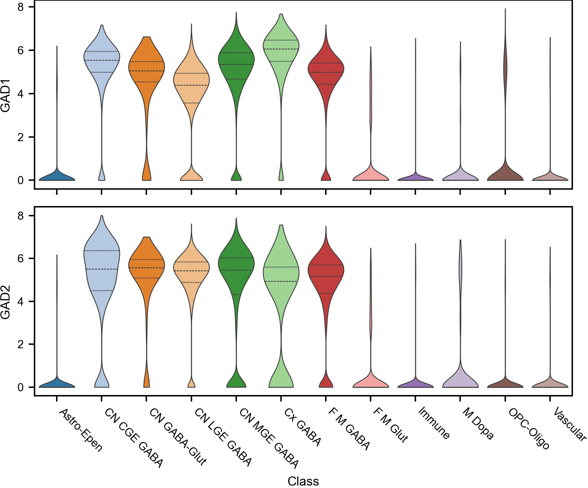
3. stacked_barplot – Cell Type Composition¶
Show the proportion of cell types (e.g. Class) within each anatomical region or donor.
[8]:
# Load obs for barplot/pieplot (these accept a DataFrame directly)
adata = anndata.read_h5ad(os.path.expanduser(adata_path), backed="r")
obs = adata.obs.copy()
adata.file.close()
# Build color palettes from the existing color columns in obs
color_palettes = {}
for level in ["neighborhood", "class", "subclass", "group"]:
col_name = level.capitalize() if level != "neighborhood" else "Neighborhood"
hex_col = f"color_hex_{level}"
if hex_col in obs.columns:
color_palettes[col_name] = (
obs.drop_duplicates(col_name).set_index(col_name)[hex_col].to_dict()
)
print("Available color palettes:", list(color_palettes.keys()))
Available color palettes: ['Neighborhood', 'Class', 'Subclass', 'Group']
[9]:
# Stacked bar plot: Class composition per donor
ax = av.pl.bar_plot(
adata=obs,
groupby="Class",
split_by="donor_id",
palette=color_palettes.get("Class"),
figsize=(5, 3.5),
show=True,
legend_kws=dict(frameon=True),
)
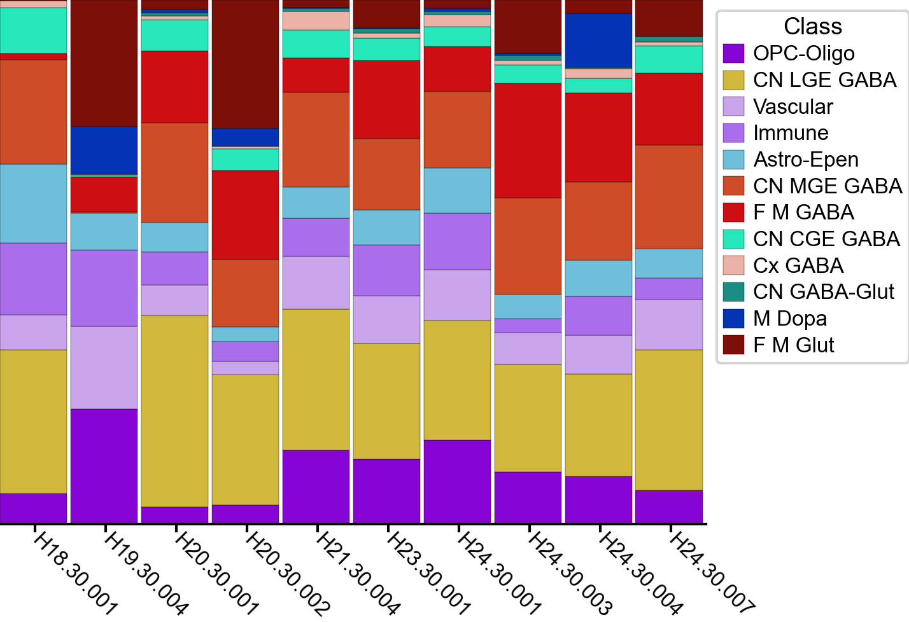
[10]:
# Stacked bar plot: Subclass composition per anatomical region
ax = av.pl.bar_plot(
adata=obs,
groupby="Subclass",
split_by="anatomical_region_merged",
palette=color_palettes.get("Subclass"),
figsize=(5, 6),
show=True,
)
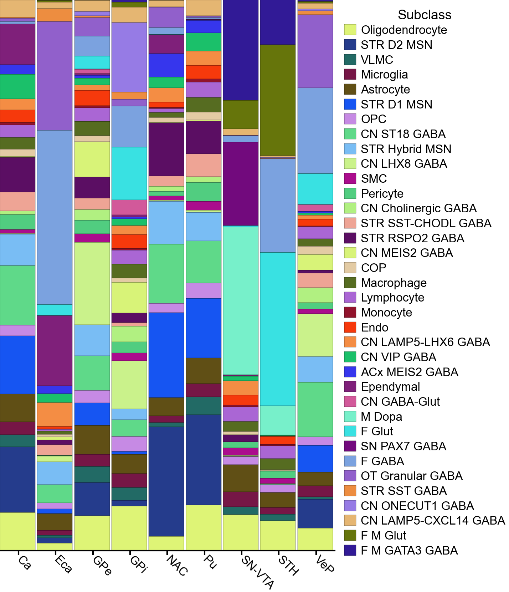
[11]:
# Marker dot plot using gene_dotplot (rich PyComplexHeatmap wrapper).
keep_genes = [
"GAD2",
"LMX1A",
"NTNG1",
"PCDH19",
"PTPRE",
"VCAN",
"FHOD3",
"LRFN2",
"GRIK4",
"NRG3",
"EBF3",
"SOX6",
"KCND3",
"ST3GAL1",
"SV2C",
"GPR26",
"NTN1",
"PEX5L",
"IL1RAP",
"DCC",
"CALB1",
"VWA5B1",
]
gene_order = list(keep_genes)
cell_type_order = None
av.pl.gene_dotplot(
adata=adata_path,
genes=keep_genes,
groupby="Subclass",
parent_col="Class",
modality="RNA",
use_raw=False,
expression_cutoff="p5",
gene_order=gene_order,
row_cluster=False,
col_cluster=False,
cmap="Reds",
palette="~/Projects/BICAN/adata/HMBA_v2/HMBA_color_palette.xlsx",
legend_kws=dict(extendfrac=0.1, extend="both", label="Mean logCPM"),
figsize=(10, 6),
plot_kws=dict(
vmin=0,
vmax=10,
row_names_side="left",
xticklabels_kws=dict(labelrotation=-30, labelsize=10, bottom=True),
yticklabels_kws=dict(labelsize=10, left=True),
legend_width=15,
),
title="Subclass markers",
show=True,
)
/home/x-wding2/Projects/Github/adataviz/adataviz/pl/expression.py:486: ImplicitModificationWarning: Trying to modify attribute `.obs` of view, initializing view as actual.
use.obs[groupby] = obs.loc[use.obs_names, groupby].tolist()
/home/x-wding2/Software/conda/m3c/lib/python3.10/site-packages/PyComplexHeatmap/dotHeatmap.py:365: FutureWarning: The provided callable <function mean at 0x150080ade200> is currently using DataFrameGroupBy.mean. In a future version of pandas, the provided callable will be used directly. To keep current behavior pass the string "mean" instead.
data2d = data.pivot_table(
/home/x-wding2/Software/conda/m3c/lib/python3.10/site-packages/PyComplexHeatmap/dotHeatmap.py:384: FutureWarning: The provided callable <function mean at 0x150080ade200> is currently using DataFrameGroupBy.mean. In a future version of pandas, the provided callable will be used directly. To keep current behavior pass the string "mean" instead.
self.kwargs["s"] = data.pivot_table(
/home/x-wding2/Software/conda/m3c/lib/python3.10/site-packages/PyComplexHeatmap/dotHeatmap.py:401: FutureWarning: DataFrame.applymap has been deprecated. Use DataFrame.map instead.
self.kwargs["s"]=self.kwargs["s"].applymap(lambda x:(x-self.smin)/delta)
/home/x-wding2/Software/conda/m3c/lib/python3.10/site-packages/PyComplexHeatmap/dotHeatmap.py:415: FutureWarning: The provided callable <function mean at 0x150080ade200> is currently using DataFrameGroupBy.mean. In a future version of pandas, the provided callable will be used directly. To keep current behavior pass the string "mean" instead.
self.kwargs["c"] = data.pivot_table(
Plotting HeatmapAnnotations
Collecting annotation legends..
/home/x-wding2/Software/conda/m3c/lib/python3.10/site-packages/PyComplexHeatmap/utils.py:684: UserWarning: This figure includes Axes that are not compatible with tight_layout, so results might be incorrect.
ax.figure.canvas.draw()
/home/x-wding2/Software/conda/m3c/lib/python3.10/site-packages/PyComplexHeatmap/utils.py:504: UserWarning: This figure includes Axes that are not compatible with tight_layout, so results might be incorrect.
ax.figure.canvas.draw()
/home/x-wding2/Software/conda/m3c/lib/python3.10/site-packages/IPython/core/pylabtools.py:170: UserWarning: This figure includes Axes that are not compatible with tight_layout, so results might be incorrect.
fig.canvas.print_figure(bytes_io, **kw)
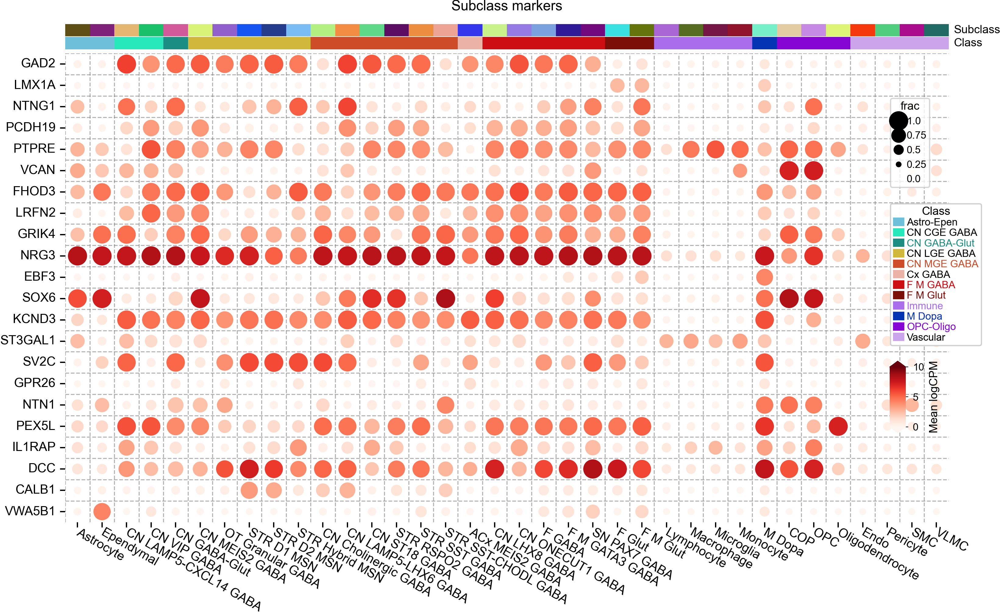
[11]:
<PyComplexHeatmap.dotHeatmap.DotClustermapPlotter at 0x15002bc32b00>
[12]:
keep_genes = [
# MEDIUM SPINY NEURONS (MSN) - High Confidence
"MEIS2",
"BCL11B",
"PPP1R1B",
"GNG7",
"ADCY5", #'EGR1','MEIS1',
"CHRM1",
"CHRM4",
"GRM4",
"KCNJ4",
"GAD2",
"GAD1",
"ARPP21",
"FOSL2",
"RFX3",
"FOXO3",
"PDE10A", #'SLC4A4','PHACTR1', # MSN Signaling, 'NPAS2'
"FOXP1",
"FOXO1",
"DRD1", # D1-MSN (Direct Pathway)
"DRD2",
"ADORA2A",
"OPRD1", # D2-MSN (Indirect Pathway):
# M Dopa
"NR4A2",
"PBX1",
"SLC6A3",
"TH",
"EBF3",
"SLC18A2",
"LMX1A",
"LMX1B",
"PITX3",
"RET",
"KCNJ6", #'NFIA',
# CHOLINERGIC INTERNEURONS (ChI) - High Confidence
"SLC18A3",
"GRK5",
"CHAT",
"SLC5A7",
"LHX6",
"LHX8",
"GDNF", # 'TLE3', 'ARX', 'INPP4B','NTRK1',
# 'ACHE', acetylcholine (ACh), degradation of acetylcholine (ACh) happen largely extracellular
]
cell_type_order = [
"STR D1 MSN",
"STR D2 MSN",
"STR Hybrid MSN",
"M Dopa",
"CN Cholinergic GABA",
]
gene_order = keep_genes
[13]:
# Second gene_dotplot example: same genes, transposed orientation.
av.pl.gene_dotplot(
adata=adata_path,
genes=keep_genes[:10],
groupby="Subclass",
parent_col="Class",
modality="RNA",
use_raw=False,
expression_cutoff="p5",
transpose=True,
cmap="Blues",
palette="~/Projects/BICAN/adata/HMBA_v2/HMBA_color_palette.xlsx",
legend_kws=dict(extendfrac=0.1, extend="both", label="Mean logCPM"),
figsize=(7, 5),
plot_kws=dict(
vmin=0,
vmax=8,
xticklabels_kws=dict(labelrotation=-30, labelsize=10, bottom=True),
yticklabels_kws=dict(labelsize=9, left=True),
),
title="Subclass markers (transposed)",
)
/home/x-wding2/Projects/Github/adataviz/adataviz/pl/expression.py:486: ImplicitModificationWarning: Trying to modify attribute `.obs` of view, initializing view as actual.
use.obs[groupby] = obs.loc[use.obs_names, groupby].tolist()
/home/x-wding2/Software/conda/m3c/lib/python3.10/site-packages/PyComplexHeatmap/dotHeatmap.py:365: FutureWarning: The provided callable <function mean at 0x150080ade200> is currently using DataFrameGroupBy.mean. In a future version of pandas, the provided callable will be used directly. To keep current behavior pass the string "mean" instead.
data2d = data.pivot_table(
/home/x-wding2/Software/conda/m3c/lib/python3.10/site-packages/PyComplexHeatmap/dotHeatmap.py:384: FutureWarning: The provided callable <function mean at 0x150080ade200> is currently using DataFrameGroupBy.mean. In a future version of pandas, the provided callable will be used directly. To keep current behavior pass the string "mean" instead.
self.kwargs["s"] = data.pivot_table(
/home/x-wding2/Software/conda/m3c/lib/python3.10/site-packages/PyComplexHeatmap/dotHeatmap.py:401: FutureWarning: DataFrame.applymap has been deprecated. Use DataFrame.map instead.
self.kwargs["s"]=self.kwargs["s"].applymap(lambda x:(x-self.smin)/delta)
/home/x-wding2/Software/conda/m3c/lib/python3.10/site-packages/PyComplexHeatmap/dotHeatmap.py:415: FutureWarning: The provided callable <function mean at 0x150080ade200> is currently using DataFrameGroupBy.mean. In a future version of pandas, the provided callable will be used directly. To keep current behavior pass the string "mean" instead.
self.kwargs["c"] = data.pivot_table(
Plotting HeatmapAnnotations
Collecting annotation legends..
/home/x-wding2/Software/conda/m3c/lib/python3.10/site-packages/PyComplexHeatmap/utils.py:684: UserWarning: This figure includes Axes that are not compatible with tight_layout, so results might be incorrect.
ax.figure.canvas.draw()
/home/x-wding2/Software/conda/m3c/lib/python3.10/site-packages/PyComplexHeatmap/utils.py:504: UserWarning: This figure includes Axes that are not compatible with tight_layout, so results might be incorrect.
ax.figure.canvas.draw()
[13]:
<PyComplexHeatmap.dotHeatmap.DotClustermapPlotter at 0x1500305a9d50>
/home/x-wding2/Software/conda/m3c/lib/python3.10/site-packages/IPython/core/events.py:82: UserWarning: This figure includes Axes that are not compatible with tight_layout, so results might be incorrect.
func(*args, **kwargs)
/home/x-wding2/Software/conda/m3c/lib/python3.10/site-packages/IPython/core/pylabtools.py:170: UserWarning: This figure includes Axes that are not compatible with tight_layout, so results might be incorrect.
fig.canvas.print_figure(bytes_io, **kw)
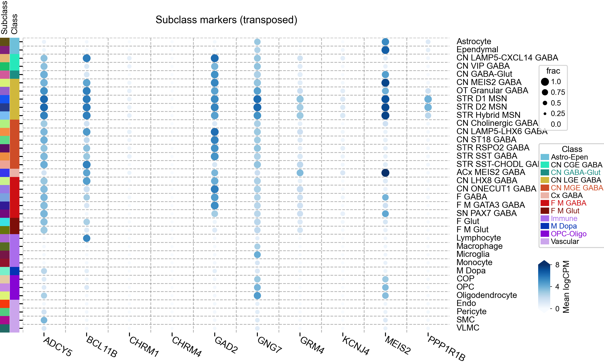
Cell statistics plots¶
A family of categorical-composition plots (rose / ring / pie / area / dot / trend / sankey / chord / venn / upset) implemented on top of matplotlib, with a few optional extras (matplotlib-venn, upsetplot, pycirclize, adjustText).
All functions accept either an :class:anndata.AnnData (recommended: palettes are auto-loaded from adata.uns) or a :class:pandas.DataFrame / path to a tabular file. Each function with a legend exposes a legend_kws argument that is forwarded to matplotlib.
[14]:
import os
import warnings
import anndata
import pandas as pd
import adataviz as av
warnings.filterwarnings("ignore", category=FutureWarning)
warnings.filterwarnings("ignore", category=DeprecationWarning)
adata_path = os.path.expanduser(
"~/Projects/BICAN/adata/HMBA_v2/HMBA.Group.downsample_1500.h5ad"
)
# Load the full AnnData so colour palettes stored in ``adata.uns``
# (e.g. ``Class_colors``, ``Group_colors``) are picked up automatically.
adata = anndata.read_h5ad(adata_path)
print("adata:", adata.shape)
print(
"Class:",
adata.obs["Class"].nunique(),
"| Subclass:",
adata.obs["Subclass"].nunique(),
"| Group:",
adata.obs["Group"].nunique(),
)
adata: (70134, 36601)
Class: 12 | Subclass: 36 | Group: 60
1. rose_plot – Nightingale polar bar of cell-class counts¶
[15]:
av.pl.rose_plot(
adata,
groupby="Class",
figsize=(5, 5),
label_orientation="radial",
title="Cell counts per Class",
)
plt.show()
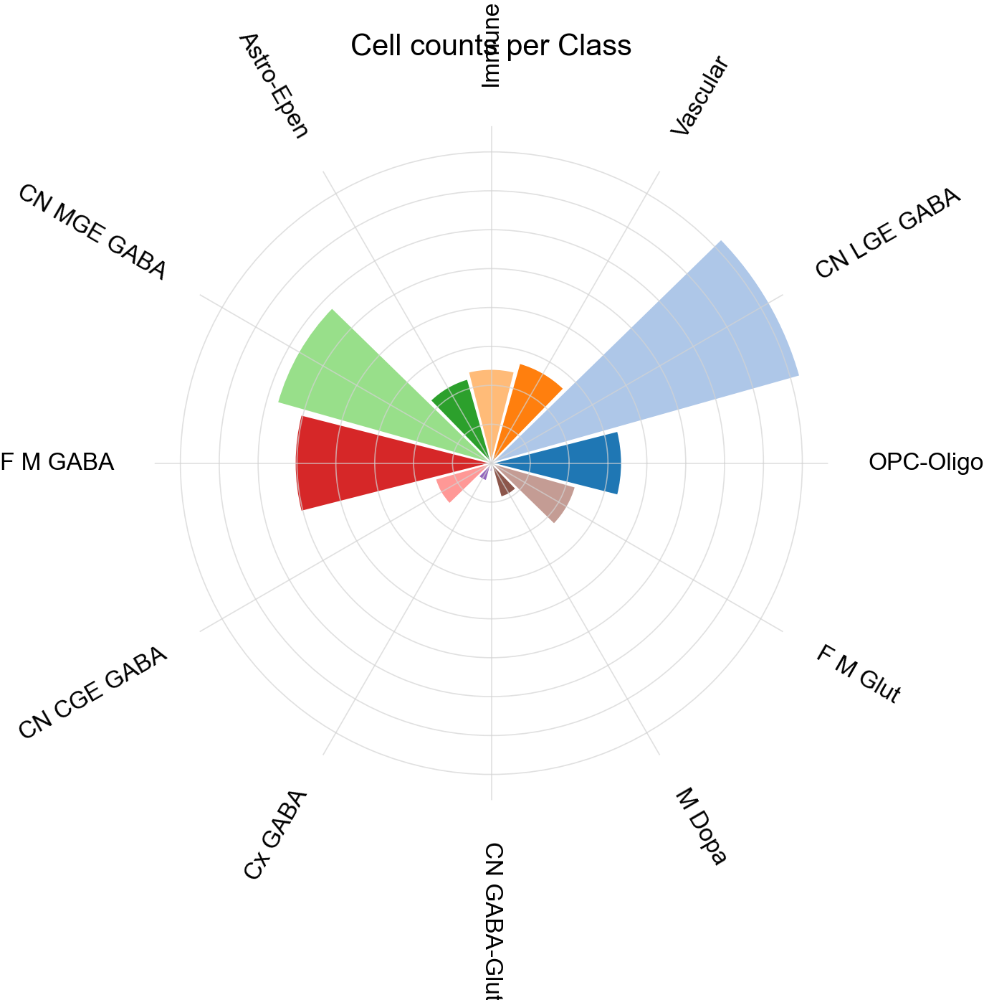
2. ring_plot – donut chart of class proportions¶
[16]:
av.pl.ring_plot(
adata,
groupby="Class",
figsize=(4, 4),
title="Class composition",
show_legend=True, # label_orientation='radial',
adjust_text=True, # de-overlap labels using ``adjustText`` if installed
legend_kws=dict(fontsize=7, ncol=1),
)
plt.show()
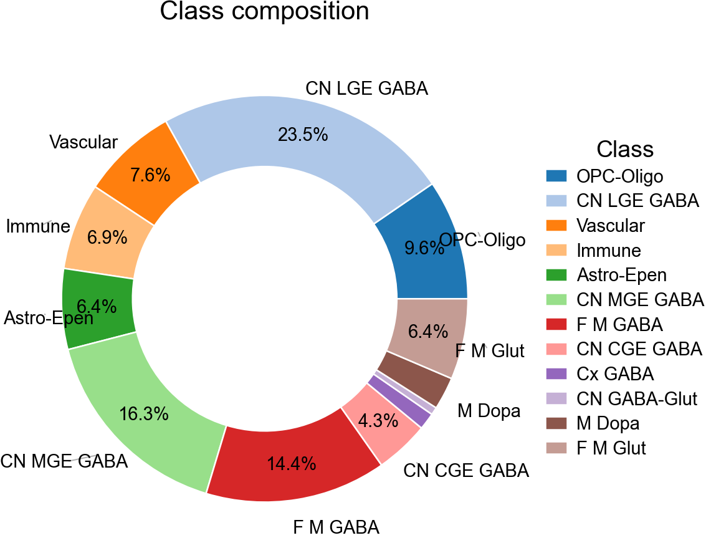
[17]:
av.pl.ring_plot(
adata,
groupby="Class",
label_orientation="radial",
figsize=(4, 4),
title="Class composition",
legend_loc="center",
show_legend=True,
adjust_text=True, # de-overlap labels using ``adjustText`` if installed
legend_kws=dict(fontsize=7, ncol=1),
)
plt.show()
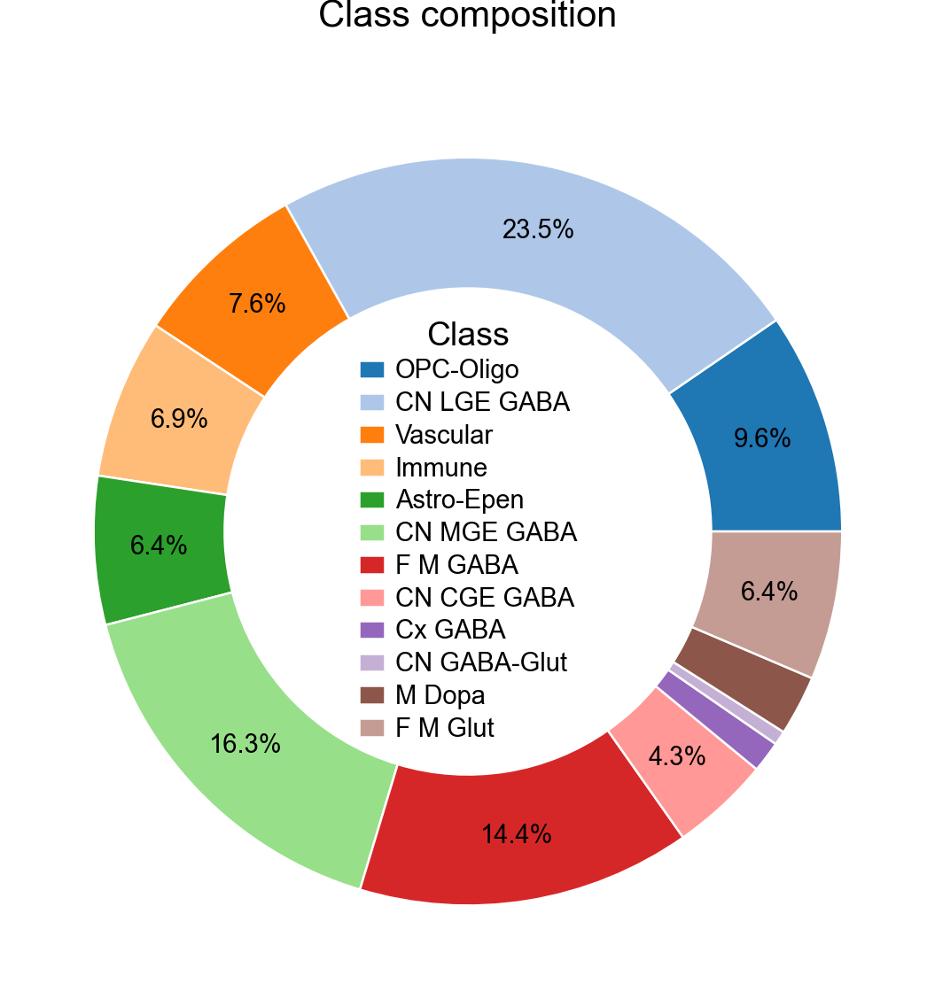
3. pie_plot – pie chart, optionally faceted by anatomical region¶
[18]:
av.pl.pie_plot(
adata,
figsize=(4, 3),
groupby="Class",
title="Overall Class proportions",
)
plt.show()
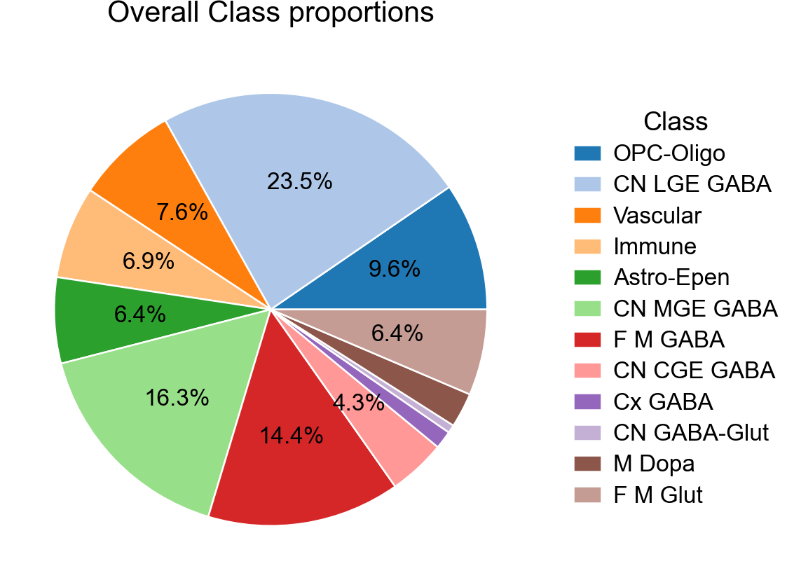
[19]:
# Subset to the most common regions to keep the facet grid readable.
top_regions = (
adata.obs["anatomical_region_merged"].value_counts().head(4).index.tolist()
)
sub = adata[adata.obs["anatomical_region_merged"].isin(top_regions)].copy()
av.pl.pie_plot(
sub,
groupby="Class",
split_by="anatomical_region_merged",
ncols=2,
title="Class proportions by anatomical region",
)
plt.show()
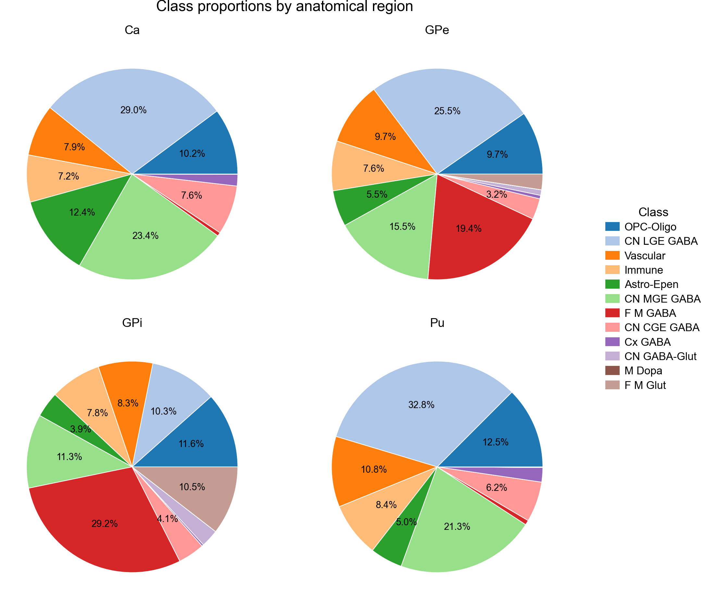
4. area_plot – stacked area showing Class composition across donors¶
[20]:
av.pl.area_plot(
adata,
groupby="Class",
split_by="donor_id",
figsize=(7, 4),
title="Class composition across donors",
legend_kws=dict(fontsize=7, ncol=1),
)
plt.show()
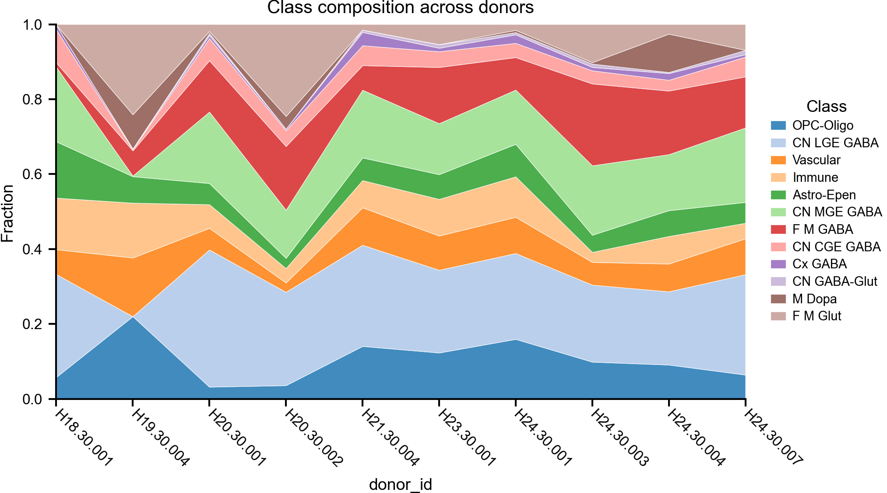
5. dot_plot – grid where size = count and colour = column-fraction¶
[21]:
# Pick the top Subclasses for legibility.
top_subclasses = adata.obs["Subclass"].value_counts().head(15).index.tolist()
sub = adata[adata.obs["Subclass"].isin(top_subclasses)].copy()
av.pl.dot_plot(
sub,
figsize=(3.5, 4),
groupby="Subclass",
split_by="Class",
title="Subclass × Class abundance",
)
plt.show()
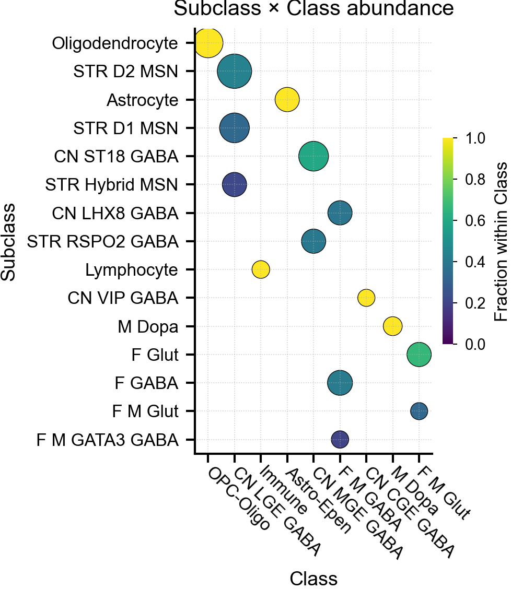
6. trend_plot – line trend of Class fraction across donors¶
[22]:
av.pl.trend_plot(
adata,
groupby="Class",
split_by="donor_id",
figsize=(5, 4),
title="Class fraction trend across donors",
legend_kws=dict(fontsize=7),
)
plt.show()
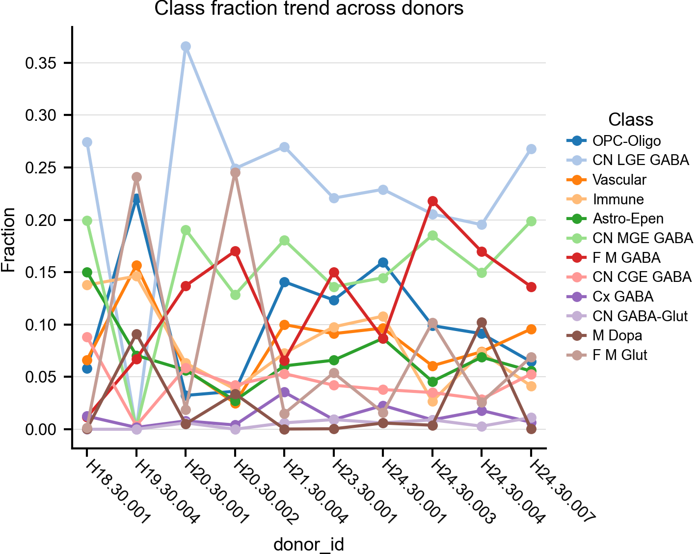
7. sankey_plot – two-column flow from Class → Group¶
Each Class node spans the full canvas height proportional to its size, and each ribbon meets the corresponding Group node on the right.
[23]:
av.pl.sankey_plot(
adata,
left="Class",
right="Subclass",
figsize=(3.5, 4),
title="Class → Subclass flow",
)
plt.show()
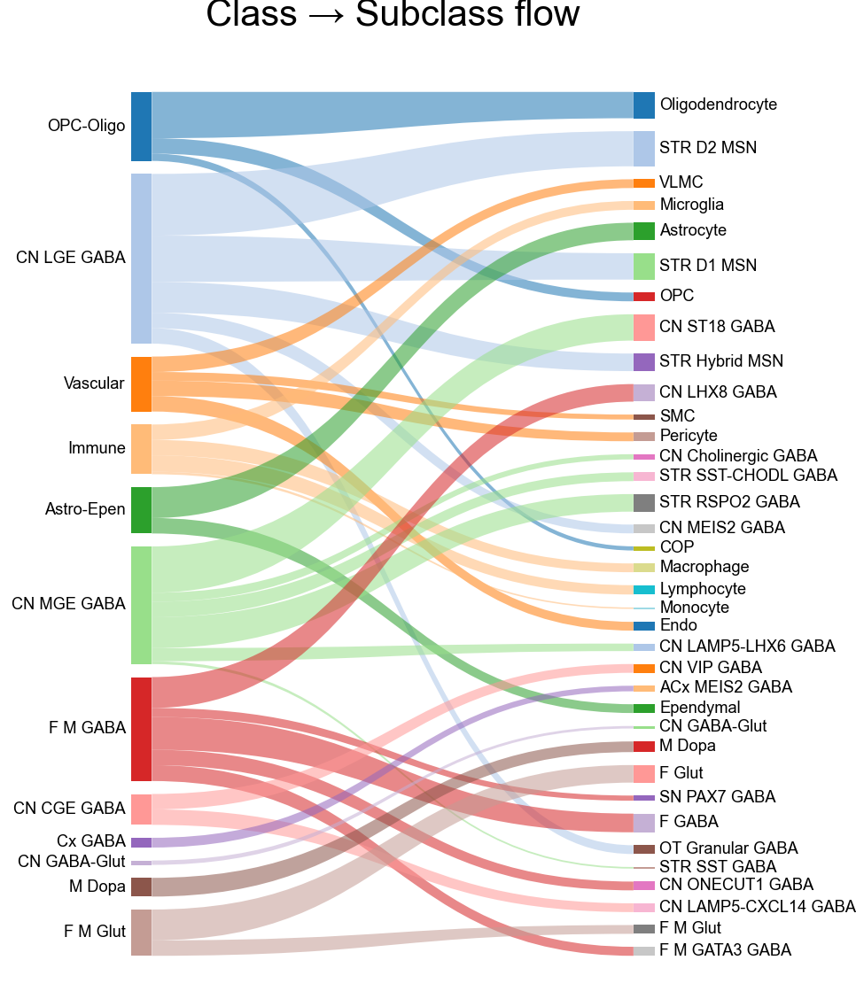
8. chord_plot – circular co-occurrence between Class and region¶
[24]:
sub = adata[adata.obs["anatomical_region_merged"].isin(top_regions)].copy()
av.pl.chord_plot(
sub,
left="Class",
right="anatomical_region_merged",
figsize=(6, 6),
adjust_text=True, # min_flow_frac=0.1,
title="Class × Region chord",
)
plt.show()
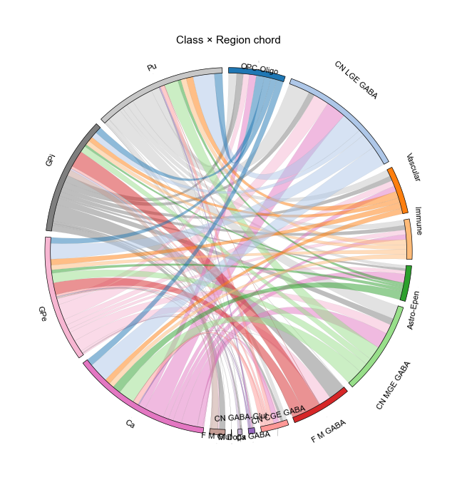
10. upset_plot – expressed-gene overlap across five Classes¶
Compute the set of genes detected in >=20% of cells for each Class, then visualise their overlap. Upset is far more legible than Venn for >=4 sets.
[26]:
import numpy as _np
# Per-Class set of genes detected in >=20% of cells (sparse-aware).
import scipy.sparse as _sp
top_classes = adata.obs["Class"].value_counts().head(5).index.tolist()
rows = []
for cls in top_classes:
sub = adata[adata.obs["Class"] == cls]
X = sub.X
if _sp.issparse(X):
frac = _np.asarray((X > 0).mean(axis=0)).ravel()
else:
frac = (X > 0).mean(axis=0)
genes = sub.var_names[frac >= 0.2].tolist()
rows.extend([(cls, g) for g in genes])
upset_df = pd.DataFrame(rows, columns=["Class", "gene"])
av.pl.upset_plot(
upset_df,
groupby="Class",
set_by="gene",
figsize=(9, 4.5),
title="Genes detected in >=20% of cells per Class",
)
plt.show()
/home/x-wding2/Software/conda/m3c/lib/python3.10/site-packages/IPython/core/pylabtools.py:170: UserWarning: This figure includes Axes that are not compatible with tight_layout, so results might be incorrect.
fig.canvas.print_figure(bytes_io, **kw)
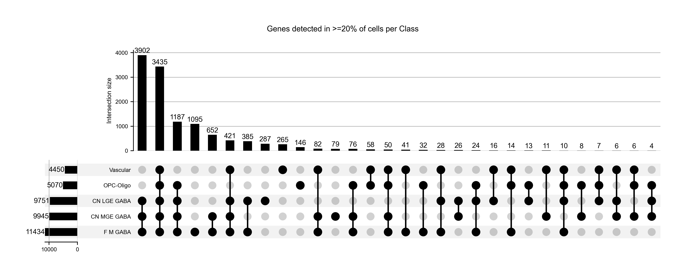
11. complex_heatmap – annotated marker heatmap with clustering¶
A 30+ marker panel covering glutamatergic, GABAergic, dopaminergic and glial Subclasses. Rows are clustered by z-score similarity and an extra row stripe shows the dominant Class per Subclass.
[27]:
# Curated panel covering glutamatergic, GABAergic, dopaminergic and glial markers.
panel = [
"SLC17A7",
"SLC17A6",
"SATB2",
"NEUROD2", # Glut
"GAD1",
"GAD2",
"SLC32A1",
"PVALB",
"SST",
"VIP",
"LAMP5", # GABA-IN
"DRD1",
"DRD2",
"PPP1R1B",
"TAC1",
"PENK", # MSN
"TH",
"SLC6A3",
"SLC18A2",
"NR4A2", # Dopa
"CHAT",
"SLC18A3", # Cholinergic
"AQP4",
"GFAP",
"SLC1A2", # Astro
"PDGFRA",
"OLIG1", # OPC
"MOG",
"MBP",
"PLP1", # Oligo
"CX3CR1",
"P2RY12", # Microglia
"CLDN5",
"PECAM1", # Vascular
]
panel = [g for g in panel if g in adata.var_names]
top_subclasses = adata.obs["Subclass"].value_counts().head(20).index.tolist()
sub = adata[adata.obs["Subclass"].isin(top_subclasses)].copy()
av.pl.complex_heatmap(
sub,
genes=panel,
groupby="Subclass",
z_score="row",
cmap="RdBu_r",
annotate=["Class"],
row_cluster=True,
col_cluster=True,
figsize=(8, 7.5),
title="Marker z-score per Subclass (rows annotated by Class)",
plot_kws=dict(
xticklabels_kws=dict(labelrotation=-45, labelsize=8, bottom=True),
yticklabels_kws=dict(labelsize=8, right=True),
),
)
plt.show()
/home/x-wding2/Software/conda/m3c/lib/python3.10/site-packages/PyComplexHeatmap/utils.py:504: UserWarning: This figure includes Axes that are not compatible with tight_layout, so results might be incorrect.
ax.figure.canvas.draw()
/home/x-wding2/Software/conda/m3c/lib/python3.10/site-packages/IPython/core/pylabtools.py:170: UserWarning: This figure includes Axes that are not compatible with tight_layout, so results might be incorrect.
fig.canvas.print_figure(bytes_io, **kw)
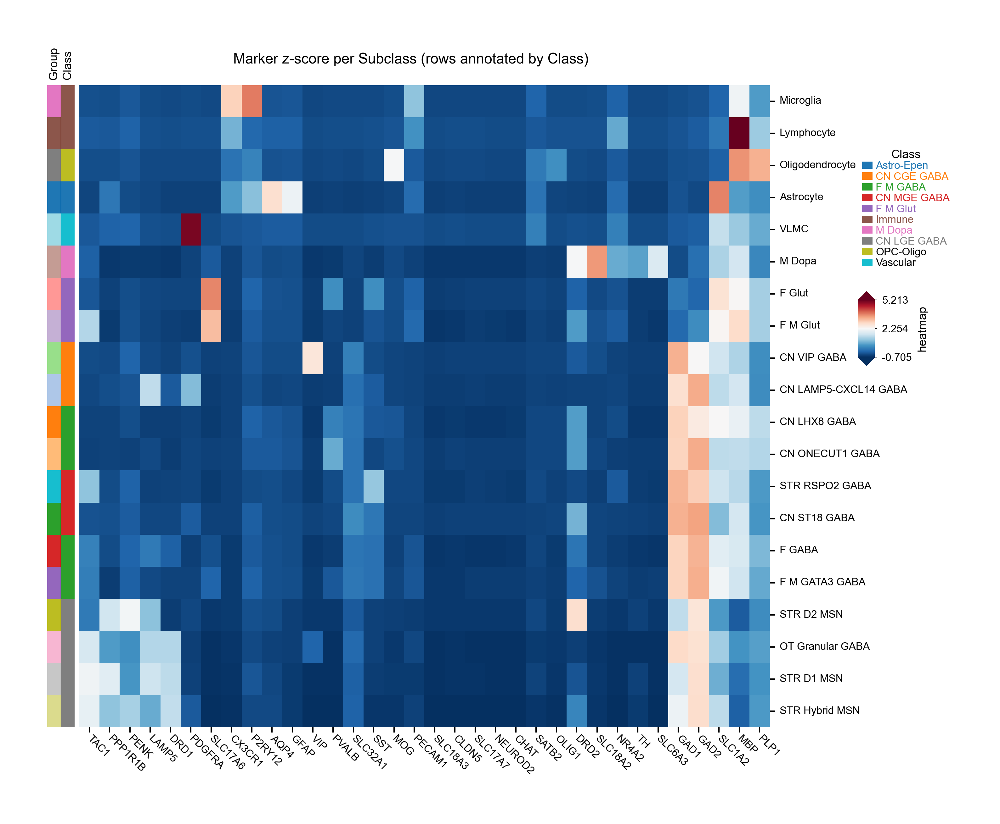
12. complex_dotplot – annotated dot heatmap¶
Same gene panel but rendered as a dot plot (size = % expressing, colour = mean expression). Subclasses on rows, genes on columns.
[28]:
av.pl.complex_dotplot(
sub,
genes=panel,
groupby="Subclass",
expression_cutoff=0.1,
cmap="Reds",
annotate=["Class"],
row_cluster=True,
col_cluster=False,
figsize=(9, 8),
title="Marker dot heatmap per Subclass",
plot_kws=dict(
xticklabels_kws=dict(labelrotation=-45, labelsize=8, bottom=True),
yticklabels_kws=dict(labelsize=8, right=True),
),
)
plt.show()
/home/x-wding2/Software/conda/m3c/lib/python3.10/site-packages/PyComplexHeatmap/utils.py:684: UserWarning: This figure includes Axes that are not compatible with tight_layout, so results might be incorrect.
ax.figure.canvas.draw()
/home/x-wding2/Software/conda/m3c/lib/python3.10/site-packages/PyComplexHeatmap/utils.py:504: UserWarning: This figure includes Axes that are not compatible with tight_layout, so results might be incorrect.
ax.figure.canvas.draw()
/home/x-wding2/Software/conda/m3c/lib/python3.10/site-packages/IPython/core/pylabtools.py:170: UserWarning: This figure includes Axes that are not compatible with tight_layout, so results might be incorrect.
fig.canvas.print_figure(bytes_io, **kw)
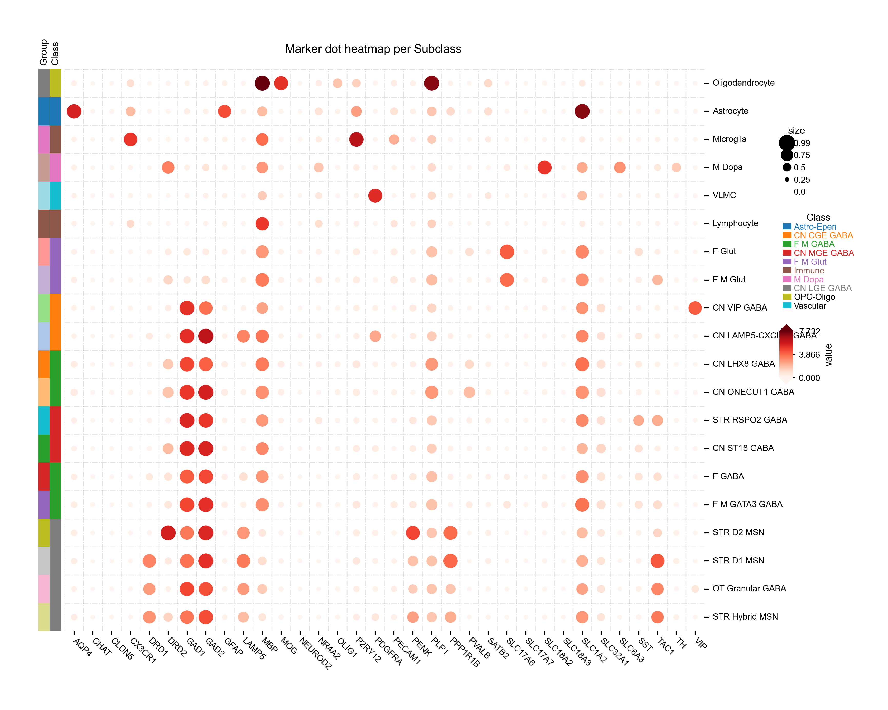